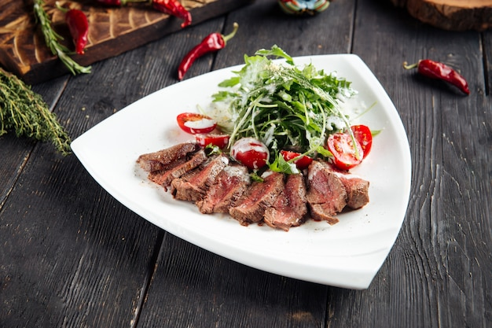

Biftek me domate dhe rukolo

Pershkrimi
Eshte nje recete tradicionale shume e shijshme e cila ja vlen te pergatitet. Ju befte mire
Perberesit
- 4 biftekë
- 3 luge qaji djathe blu(gorgonzoll)
- 4 lugë çaji vaj ulliri
- 2 kuti me domate qershi
- 2 lugë çaji uthull të bardhë
- 1/4 qepë të vogël të kuqe
- 6 thelpinj hudhër
- Kripë, piper
- Rozmarinë
- Sallatë rukola për servirje
Pergatitja
- Ngrohni furrën në 220 gradë.
- Nxehni 1 lugë vaji në tigan dhe shtoni biftekët me kripë, piper dhe hudhër dhe lerini të gatuhen deri sa të marrin ngjyrë kafe të artë, rreth 3 minuta.
- Vendosni domatet dhe rozmarinën në tigan dhe shtoni pak vaj me kripë dhe piper.
- Në një tas të vogël, kombinoni uthull, 3 lugë gjelle vaj dhe 1/4 lugë çaji kripë dhe piper. Përzijini me qepë dhe djathë blu(gorgonzola).
- Shërbejeni biftekun me domate , hudhër dhe sallatë rukola